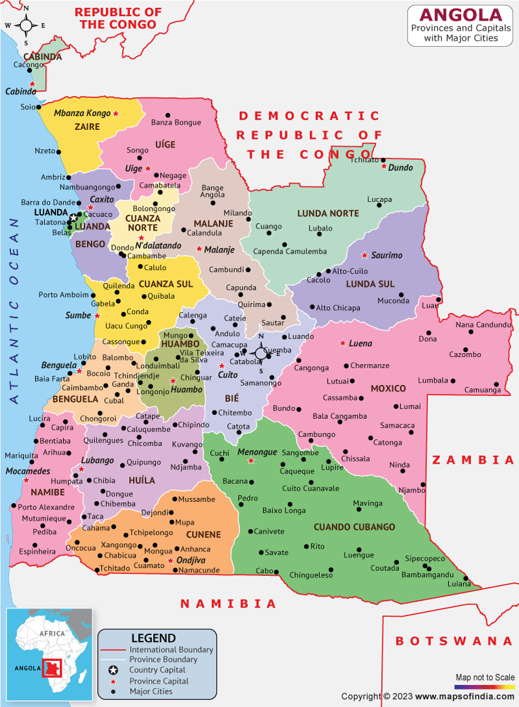

Angola é um país da região da África Central. É um território populoso, onde vivem, onde vivem 34 milhões de pessoas. Possui o petróleo como base da sua economia,apesar disso,enfrenta uma série de problemas socieconômicos e estruturais que se agravaram com a guerra cívil, que durou de 1975 a 2002. Sua capital é a cidade portuária de Luanda, banhado pelo ocenao atlântico.
.png "Imagem da bandeira de Angola")